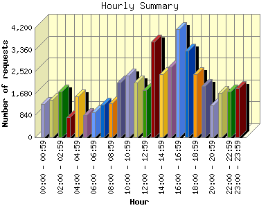
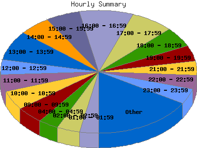

Report generated by Analog 6.0 and Report Magic 2.21
|
Web Server Statistics for "Harish Narayanan (hnarayan) - October 2007" Report generated by Analog 6.0 and Report Magic 2.21 |
The Hourly Summary identifies the level of activity broken down by each hour. Remember that one page hit can result in several server requests as the images for each page are loaded. This summary also compares the level of activity during working hours and after hours as a total for the report time frame.


| Hour | Number of requests | Number of bytes transferred | Percentage of the bytes | Percentage of the requests | |
|---|---|---|---|---|---|
| 1. | 00:00 - 00:59 | 1,272 | 30.906 MB | 2.12% | 2.73% |
| 2. | 01:00 - 01:59 | 1,424 | 44.656 MB | 3.06% | 3.05% |
| 3. | 02:00 - 02:59 | 1,758 | 36.665 MB | 2.51% | 3.77% |
| 4. | 03:00 - 03:59 | 762 | 40.326 MB | 2.76% | 1.63% |
| 5. | 04:00 - 04:59 | 1,558 | 54.504 MB | 3.73% | 3.34% |
| 6. | 05:00 - 05:59 | 854 | 32.840 MB | 2.25% | 1.83% |
| 7. | 06:00 - 06:59 | 967 | 36.882 MB | 2.53% | 2.07% |
| 8. | 07:00 - 07:59 | 1,246 | 84.320 MB | 5.78% | 2.67% |
| 9. | 08:00 - 08:59 | 1,292 | 43.382 MB | 2.97% | 2.77% |
| 10. | 09:00 - 09:59 | 2,094 | 65.823 MB | 4.51% | 4.49% |
| 11. | 10:00 - 10:59 | 2,355 | 114.712 MB | 7.86% | 5.05% |
| 12. | 11:00 - 11:59 | 2,109 | 83.345 MB | 5.71% | 4.52% |
| 13. | 12:00 - 12:59 | 1,818 | 61.079 MB | 4.18% | 3.90% |
| 14. | 13:00 - 13:59 | 3,656 | 82.751 MB | 5.67% | 7.84% |
| 15. | 14:00 - 14:59 | 2,413 | 107.979 MB | 7.40% | 5.17% |
| 16. | 15:00 - 15:59 | 2,675 | 70.790 MB | 4.85% | 5.73% |
| 17. | 16:00 - 16:59 | 4,155 | 72.759 MB | 4.99% | 8.90% |
| 18. | 17:00 - 17:59 | 3,335 | 79.401 MB | 5.44% | 7.15% |
| 19. | 18:00 - 18:59 | 2,406 | 60.060 MB | 4.12% | 5.16% |
| 20. | 19:00 - 19:59 | 1,960 | 70.861 MB | 4.86% | 4.20% |
| 21. | 20:00 - 20:59 | 1,213 | 36.873 MB | 2.53% | 2.60% |
| 22. | 21:00 - 21:59 | 1,694 | 30.069 MB | 2.06% | 3.63% |
| 23. | 22:00 - 22:59 | 1,746 | 53.589 MB | 3.67% | 3.74% |
| 24. | 23:00 - 23:59 | 1,897 | 64.781 MB | 4.44% | 4.07% |
| Work Hours (8:00am-4:59pm) | 22,567 | 702.619 MB | 48.14% | 48.37% | |
| After Hours (5:00pm-7:59am) | 24,092 | 756.732 MB | 51.85% | 51.63% | |
This report was generated on November 13, 2007 19:06.
Report time frame October 1, 2007 00:03 to October 31, 2007 23:59.
| Web statistics report produced by: | |
 Analog 6.0 Analog 6.0 |  Report Magic 2.21 Report Magic 2.21 |